Travelocity Redesign
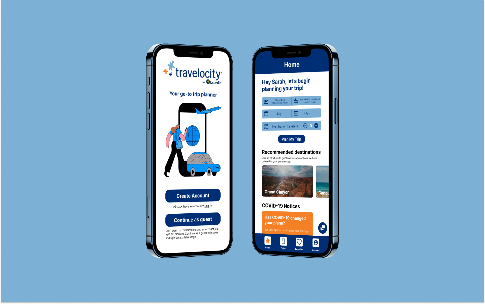Overview
Over the span of six days, my team and I redesigned the Travelocity app, an online travel agency with services such as flights, accomodations, rental cars, cruises and packaged vacations, to create a seamless one-stop trip booking experience with improved flow and mobile interface.
We presented our design to a panel of industry professionals and won first place in the beginners category at the
SB Creative Lab's 2022 PiXEL Designathon.
Collaborators
Muskaan Mathur, Kristie Le
Role
UX Design, UX Research
Timeframe
6 days (April 7 - April 13, 2022)
Tools
Figma, Google Forms
Problem
With countries and cities slowly reopening their borders, students and families are thinking about planning memorable senior trips, study abroad programs, or family vacations. However, despite the numerous trip planners, and accommodation booking, the user experience falls short.
How might we redesign the Travelocity app to better the user’s experience by improving the flow and mobile interface?
Research
We conducted secondary research through competitor analysis and primary research in the form of a survey.
Competitor Analysis
Each member of the team was tasked with analyzing the pros and cons of both the app we were redesigning, Travelocity, and a similar app (i.e. Kayak, Tripadvisor, and Hopper). The goal of this step was to better understand the app we were redesigning, as well as, learn from other apps to see what was and was not working for them since we lacked knowledge about travel apps.
Travelocity: Our favorite aspect of the app is how comprehensive the trip planning could be when using the “Explore Trips” page because the user’s related accommodations, flights, and tickets are all in one place. However, this feature was hidden and only appears after the user begins planning their trip. We decided to structure our redesign by highlighting this feature to create a seamless one-stop trip booking experience rather than having the app feel like a mishmash of different services.
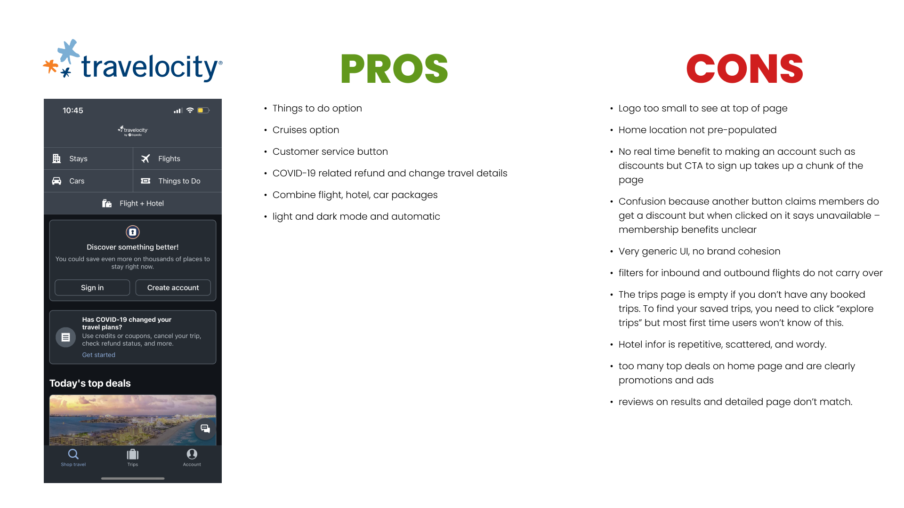Hopper: Through its youthful, fun aesthetic achieved through bright colors and cute animal animations, Hopper's app appeals to Gen Z and millennials. In addition, the app constantly reminds users of how Hopper is helping them save money through cashbacks, discounts, vouchers, deals, fee predictions, and insurance; this is perfect for Gen Z travelers who usually are on a tighter budget. The app also makes it easy to plan trips as a group through its sharing feature and travel buddy feature.
Tripadvisor: Tripadvisor places its emphasis on user interaction through forums, guides, and reviews.
Kayak: Kayak is the most similar to Travelocity but differentiates itself with features such as theme selection and flight inspiration.
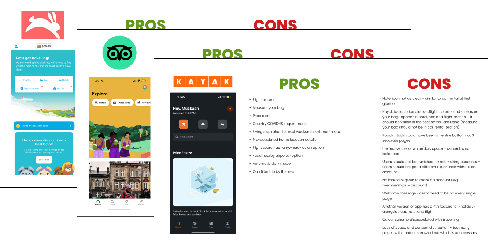Survey
Our survey used a mix of multiple-choice, checkbox, and free-response questions to learn how people plan and book trips. From our survey responses, we learned about their traveling preferences and most wanted features. I will go in depth regarding these findings in the ideation section.
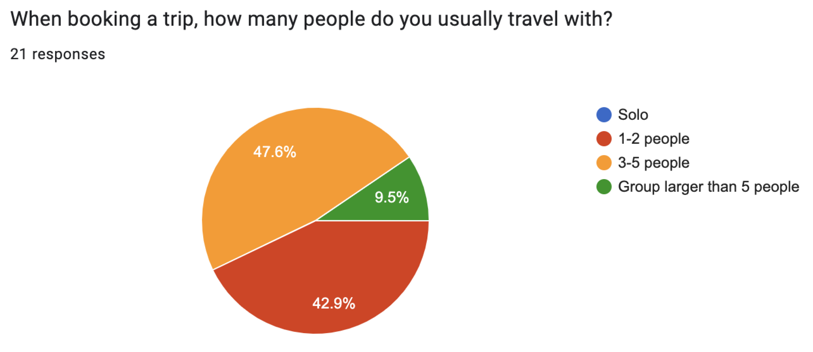 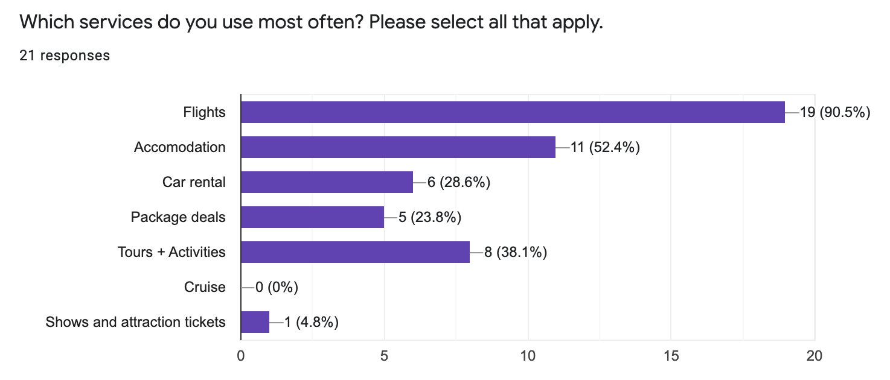User Persona
From our research, we created one user persona and began to brainstorm ideas to help solve the pain points of this user.
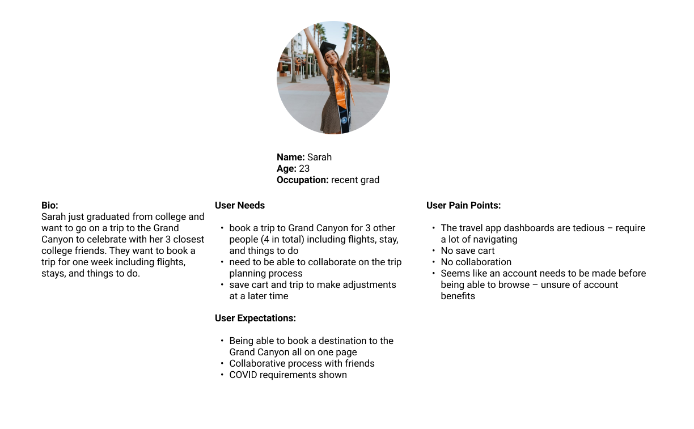Affinity Diagram
We synthesized our research findings using affinity mapping. After making categorizing our data and identifying patterns, we narrowed down five main insights that we used to drive the direction of our redesign.
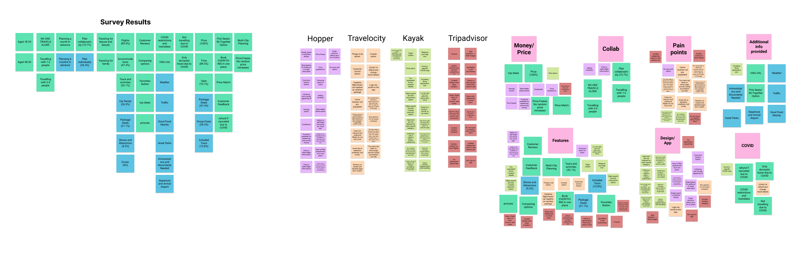Main Insights
01
Utilize Many Services
Aside from cruise and shows/attraction tickets, respondents use travel apps to book tickets for multiple services, thus further justifying the importance of creating an inclusive, one-stop travel experience where users can plan every aspect of their trip in one place.
02
Travel and Plan In Groups
100% of respondents travel in groups and 71.4% of respondents like to plan collaboratively, thus group planning features are a must have.
03
COVID Information
Nearly 1/4 of respondents shared that want COVID-related information to stay updated on the latest COVID restrictions of the countries they are looking to travel to. Thus, we learned that adding COVID updates would help users feel more at ease traveling again.
04
Popular Features
Respondents shared that they want to be able to see more customer reviews, comparing different options, and want more images on the app.
05
Cognitive Overload
The Travelocity pages often have lots of information, especially lots of long paragraphs, resulting in cognitive overload, especially on the hotel pages.
User Flow
Before we moved onto wireframing, we created a user flow to better understand the architecture of our app so we would know which pages we needed to create.
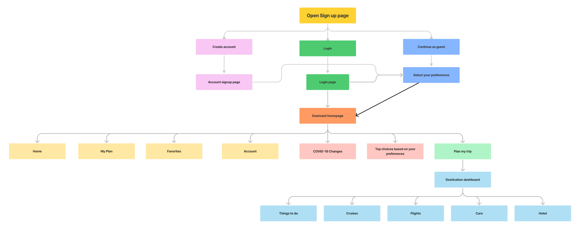Mid-fidelity Wireframing
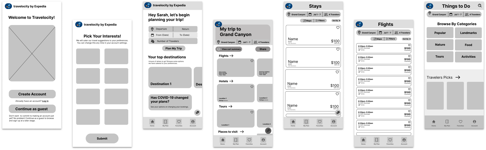We began to produce mid-fidelity frames for each page using Figma. As mentioned previously, we focused on redesigning the app into a comprehensive, seamless trip planning experience. Thus, we spent most of our time redesigning the home page. Instead of having the user pick which service (i.e. stays, flights, packages, cars, things to do, and cruises) they want to begin with first, we had them pick their start and end location, time of travel, and the number of travelers. Then, they will be directed to a page where they can begin to plan any and all aspects of their trips.
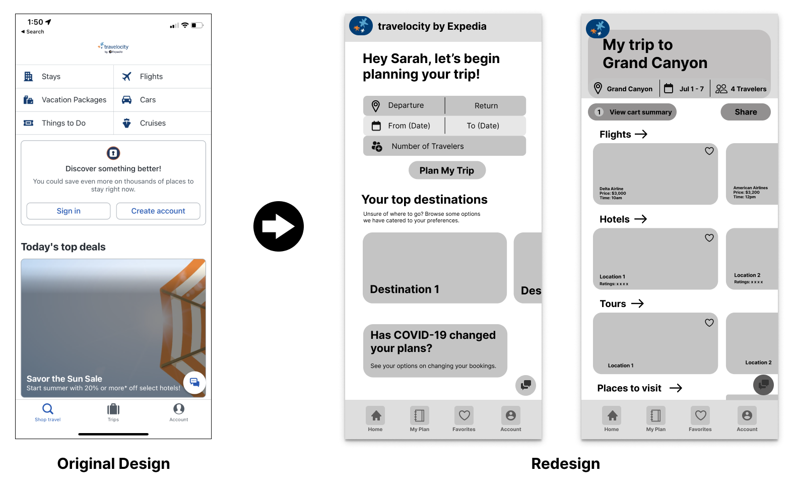Color
The current app uses very minimal color and does not stand out in the sea of travel apps, so for our redesign we wanted the app to be more exciting and fun to fit the theme of travel and vacation. We used the font and colors from the logo as the main colors and font of our redesign.
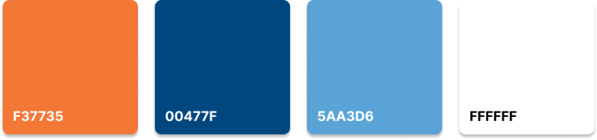Final Solution
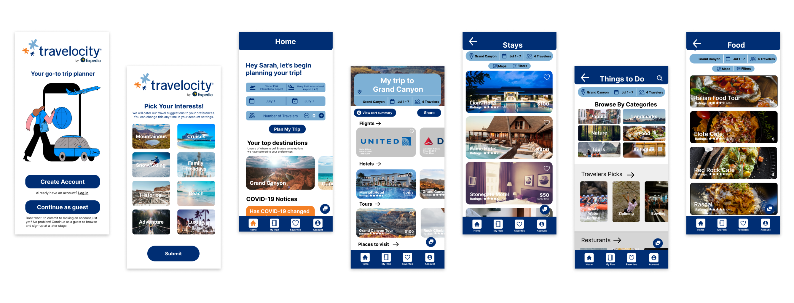Create an account: Users can create an account if they are new to the app, or they can choose to continue as a guest and create an account later. When creating their account, users are prompted to choose their traveling interests to receive catered travel suggestions.
Create an account
Begin planning trip: Users can begin to plan their trip by choosing their location and departure/arrival date. Once that information has been inputted, they will be redirected to a page dedicated to planing for that specific trip where they can access different flights, accomodations, and attractions.

Begin Planning Trip
Book a flight: For many travelers, the first order of business is booking a flight. During our user research, we learned that pricing and the ability to compare their options were important to our users, so in our redesign, we used horizontal scrolling cards instead of the original vertical cards so users can see more options and easily compare prices between different the tiers of flights. This is also a better use of screen space.

Original Design: Book A Flight
Redesign: Book A Flight
Original Design: Book A Flight
Redesign: Book A Flight
Book an accomodation: The original design for booking an accomodation was extremely cluttered with information resulting in cognitive overload. Thus, for our redesign, we focused on reducing cognitive overload by eliminating or hiding a lot of the less important details and sectioning off information. Similar to flights, we also used horizontal scrolling cards to make it easier to compare different hotel rooms.
Original Design: Accomodations
Redesign: Accomodations
Original Design: Accomodations
Redesign: Accomodations
Book an attraction: Users can book attractions such as tours or find good local restaurants and landmarks. Our main change was to the attractions page. The original design just recommends popular attractions and to filter through different attractions, users must click the filter button to pick different categories. Instead, we made the attractions page a page with different categories so users can easily filter through the many types of attractions by selecting what interests them. We also placed an emphasis on recommended activities, customer reviews, and used lots of images, all highly requested features from our user survey.
Original Design: Book An Attraction

Redesign: Book An Attraction
Original Design: Book An Attraction
Redesign: Book An Attraction
Share: Majority of survey respondents shared that they plan their trips with other people, thus we created an option to add other users to plan trips together.
Share
Trips and Favorites: Users can easily find trips that they had previously planned or are currently planning. If they find flights, accomodations, or attractions that interest them and would like to save them for future trips, they can also favorite it and it would show up in the Favorites tab of the bottom navigation.
Trips and Favorites
Maps and Filter: In the original design, the maps and filter button is located at the bottom center of the screen, and it blends in with the grey background making it hard to spot. Since it is located on top of card components, there is a chance that users might accidentally click onto a card instead of the maps and filter button. Thus, we moved these buttons up to the top center and changed the color of the button to make it easier to spot and click.

Original Design: Filters

Redesign: Filter
Original Design: Filters
Redesign: Filter
Challenges and Takeaways
Time Constraint: We only had a little less than five days to complete the entire redesign so we had limited time to conduct research, as well as, ideate and prototype. Since all designers are full-time college students with conflicting schedules and were all located in different locations, scheduling a time to work together remotely was difficult. In addition to our time constraints, all of us were fairly new to UX design. Thus, learning to do complex prototyping on Figma in a few days was challenging and time consuming.
My biggest regret is not having enough time to complete our prototype. We built the majority of the pages we had originally envisioned; however, due to time constraints, we were not able to prototype all the pages. Thus, not every button works in our prototype and the formatting and design are not perfect. The pages are also not fully completed with all the features we wanted to add.
Time Management: The biggest takeaway from this project is the importance of time management. We spent the majority of our time (2.5 days) understanding our product and our users, 0.5 days ideating, 1 day creating mid-fidelity wireframes, and 1 day creating the high fidelity prototype. Looking back, we should have spent only 1.5 days on understanding and defining. Though this was great practice for using different UX Design tools, not all tools were equally useful to our understanding of the product and user. For example, the affinity diagram was not very useful, and though competitor analysis was very helpful, we spent way too much time on it. The extra day should have instead been spent on prototyping since that was the step that took up the most time and was most difficult.
Importance of Communication: Many times throughout the design sprint, we would be working on something only to later realize that our understanding of what we were doing was different. We would then have to spend time going over our plan to make sure everyone was on the same page. We later learned to always make sure everyone was on the same page about the plan before we began working on anything.
Explaining Design Decisions: In addition, we all had conflicting ideas on many aspects of the redesign; however, looking back I am so thankful for this experience. In class, my professors always taught us that one of the most important skills of a designer is the ability to explain why they made certain design decisions, as well as, convince various stakeholders to support their design decisions. Though I have experience explaining my design decisions when presenting my projects in front of my class, I have never had to convince anyone to agree with my design decisions. Thus, this was an invaluable first experience for me to practice and hone this skill. I definitely feel that my verbal persuasion and explanation skills improved throughout the design sprint.
I also learned that I won’t always be able to persuade others to agree with my designs and that’s alright. A lot of the design decisions that I did not agree with turned out way better than expected, so I also learned to be more open to other people’s opinions.
Next Steps
As mentioned above, not all of the elements have been prototyped and many of the features we initially envisioned have not been included in our final prototype, so the next step would be to create a fully working prototype with all the additional features we didn’t have time to include.
Our design was judged by a panel of professional UX Designers who provided us with valuable feedback. Their main constructive criticism was of our lack of a clear target audience. I think Travelocity should set its target audience as millennials and Gen X with an emphasis on family travel. First, these two age groups travel the most according to statistics. Secondly, Hopper is already super specific to Gen Z through its aesthetic and features, so there is no need for Travelocity to compete with Hopper for this audience. Third, the focus on family derives from the fact that most millennials and Gen X have children, and thus usually travel as a family. The one-stop trip planning experience and our collaboration feature from our redesign also work well with this target audience. In terms of features, we could add more features that cater to families such as seat picking options, a child-friendly filter, and more.
Final Thoughts
Overall, this experience was really stressful due to the time constraint but a lot of fun and very fulfilling. I was able to practice many UX tools, learn about time management, practice explaining my design decisions, and learned to do more complex prototyping on Figma.